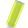
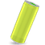

<!DOCTYPE html>
<html style="background-color: transparent;">
<head>
	<meta content="text/html;charset=utf-8" http-equiv="Content-Type">
	<meta content="utf-8" http-equiv="encoding">
	<title>LE OVERLAY</title>
</head>
<body style="margin: 0px; background-color: transparent;">
	<script src="node_modules/floating.js/build/floating.js"></script>
	<script src="https://code.jquery.com/jquery-3.5.1.min.js"></script>
	<script src="https://cdn.pubnub.com/sdk/javascript/pubnub.4.27.4.min.js"></script>
	<style type="text/css">
	    .float-container {
		    display: none;
	    }
	</style>
	<script>
  floating({
	      content: '',
	      number: 20,
	      duration: 15
	    });
  floating({
	      content: '',
	      number: 12,
	      duration: 8
	    });
  floating({
	      content: '',
	      number: 13,
	      direction: 'reverse',
	      size: [1,10]
	    });

	</script>
	<script>
		function canFestival() {
			$(".float-container").show();
			setTimeout(function() { $(".float-container").fadeOut(2000); }, 5000);
		}

		// canFestival();	

		const pubnub = new PubNub({
			  publishKey: "pub-c-21c0649c-b05f-4181-902f-eff6e35bac07",
			  subscribeKey: "sub-c-7fffa620-1201-11eb-bc34-ce6fd967af95",
			  uuid: 'myUniqueUUID'
		});

		pubnub.subscribe({
			channels: ['lights'],
			message : function(m){
				//canFestival();
				console.log(m);
			},
			error : function (error) {
				// Handle error here
				console.log(JSON.stringify(error));
			}
		});

		function nalu() {
			var filenum = Math.floor(Math.random() * 15) + 1;
			var audio = new Audio('nalu' + filenum.toString() + '.wav');
			audio.play();
		}

		pubnub.addListener({
		        status: function(statusEvent) {
			        if (statusEvent.category === "PNConnectedCategory") {
				}
			},
			message: function(msg) {
			        // console.log(msg);
				const text = msg && msg.message && msg.message.text;
				if (text === "cmd:nalu") {
					canFestival();
					nalu();
				}
			},
			presence: function(presenceEvent) {
			        // This is where you handle presence. Not important for now :)
        		}
		});
		
	</script>
</body>
</html> 
